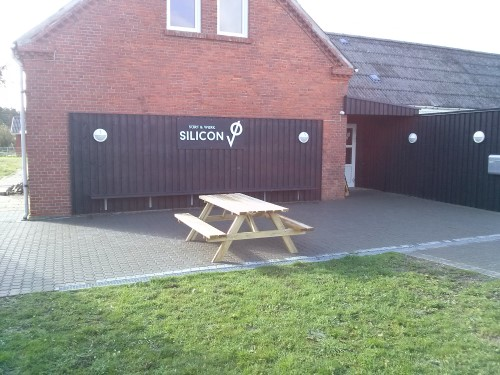
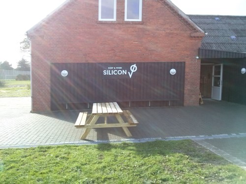
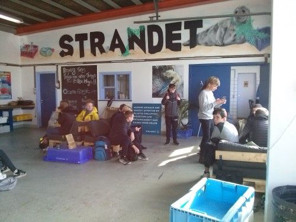
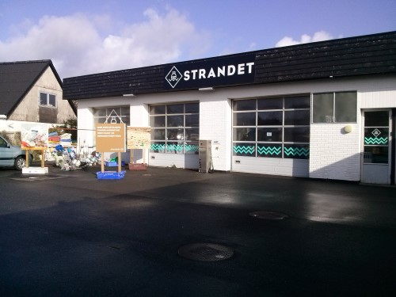
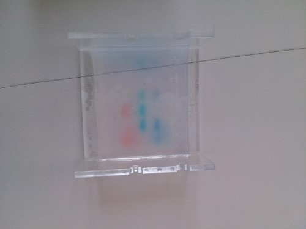
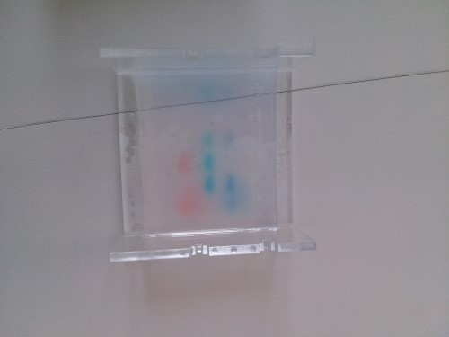

Idag lærte vi hvordan man kan lave en Html side.
Vi lærte hvordan man kan sætte tags og commandoer ind denne her hjemme side.


Vi bruger et program som hedder Visual Studio Code, som er lavet af Windows
Idag var vi i Vorupør ved to virksomheder Silicon VØ og Strandet.
I Silicon VØ hørte vi om hvad Deres kontor fælleskab var, og om hvorfor ham der styrede det var kommet til THY
 Bagefter tog vi hen til virksomheden Strandet, hvor de samler plastik sammen og smelter det om til andre ting.
 .jpg)
På dag tre var vi på HTX igen.
Der lavede vi et gen ved at blandet forskellige ting sammen for at lave en gele.
.jpg) 

Til sidst på dag tre skulle vi installere et program som hedder Archicad.
Det to ret lang tid at installere for nogle, men for de flest to det mellem 15-30 min.
Archicad var det program vi skulle bruge på dag fire.
På dag fire skulle vi igang med at bygge vores hus.
Først gik vi i gang med at lave huset i 2D, og kunne bagefter se og gå rundt i huset i 3D.
.png)
.png)
Til sidst skulle vi indrette huset og putte tag på.
Vi synes at køknet var sværest at indrette.
.png)
.png)
Idag er den sidste dag på HTX, vi har lavet vores Html hjemmeside færdig og skal ti at præsentere den.